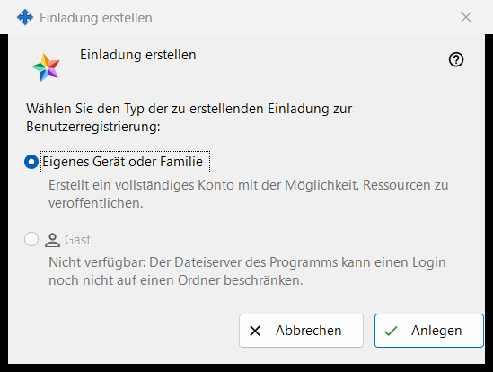
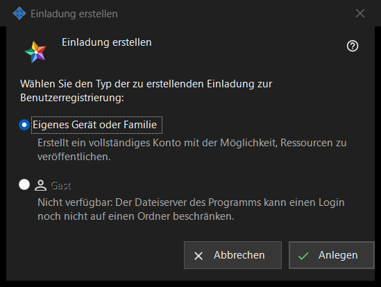

Einladung erstellen
Verwendungszweck
In diesem kleinen Fenster wird gewählt, welche Art von Konto die neue Einladung anlegt. Sie öffnen es über «Einladung erstellen..» in der Gruppe «Einladungen» der Einstellungen des Austauschservers; die Gruppe wird angezeigt, sobald der Manager den Server erreicht.


In dieser Reihenfolge
- Suchen Sie in den Einstellungen des Austauschservers die Gruppe «Einladungen» und klicken Sie auf «Einladung erstellen..».
- Lassen Sie «Eigenes Gerät oder Familie» ausgewählt.
- Klicken Sie auf «Anlegen».
- Das Fenster «Einladung erstellt» öffnet sich und zeigt den Code einmalig an: Kopieren Sie ihn dort. «Abbrechen» oder Esc schließt das Fenster, ohne etwas zu erstellen.
Die Elemente
Typ der Einladung
Die Frage «Wählen Sie den Typ der zu erstellenden Einladung zur Benutzerregistrierung:» bietet zwei Optionsfelder an. «Eigenes Gerät oder Familie» ist vorgewählt, und die Zeile darunter lautet «Erstellt ein vollständiges Konto mit der Möglichkeit, Ressourcen zu veröffentlichen.» Wer die Einladung verwendet, registriert ein eigenes Login und ein eigenes Passwort.
Anlegen
«Anlegen» fordert vom Server eine einmal verwendbare Einladung an. Bei Erfolg erscheint auf der Einstellungsseite die Zeile «Einladung erfolgreich erstellt.» und das Fenster mit dem Code öffnet sich. Lehnt der Server ab, erscheint der Grund auf der Seite, und es öffnet sich kein Codefenster. Die Liste zeigt jede Einladung mit Typ, Erstellungszeit, Status und einem Hash, nie mit ihrem Code.
Eine Einladung widerrufen
Um eine bereits erstellte Einladung aufzuheben, wählen Sie sie in der Liste aus und klicken Sie auf «Einladung widerrufen». Nach Ihrer Bestätigung funktioniert ihr Code nicht mehr.
Abbrechen
«Abbrechen» oder Esc schließt das Fenster und erstellt nichts.
Managereinstellungen · SFTP-Freigabeeinstellungen · Einstellungen des Austauschservers